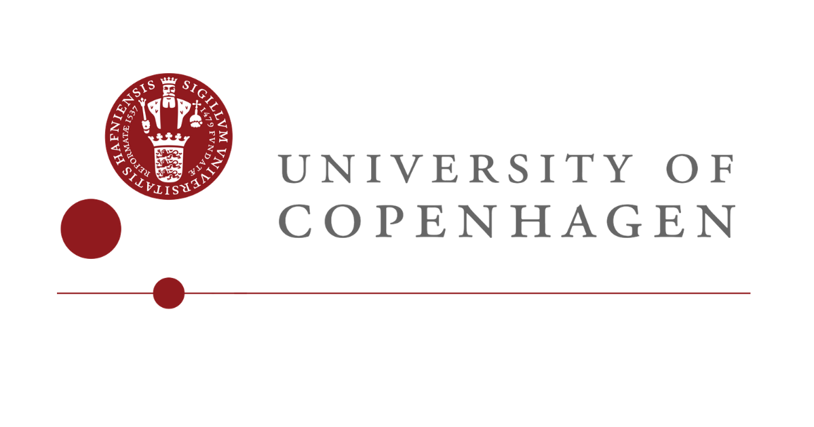

V roku 1931 Hjelmslev vytvoril Kodanský lingvistický krúžok s Viggom Brondalom, s ktorým neskôr, v roku 1939, začali vydávať časopis Acta Linguistica Hafniensia. (Cobley 2006) Kodanský krúžok bolo zoskupenie elitných dánskych lingvistov (podobné v tej dobe existovali v Prahe a Ženeve). Prvotný zámer zakladajúcich členov bol „vytvoriť študijný krúžok poskladaný z aktívnych členov, ktorí by vytvorili nový spôsob lingvistického výskumu“ podobný svojmu Pražskému náprotivku.(The Linguistics Circle of Copenhagen dátum neznámy)
Počas Hjelmslevovho života sa krúžok radil do štrukturalistickej školy – vychádzajúcej z teórie švajčiarskeho jazykovedca Ferdinanda de Saussurea. (Zaujímavosťou je, že Hjelmslev nečítal de Saussurea až do svojich 26 rokov. (Arrivé, Leader a Coquet 1992, s. 34)) Základom takéhoto prístupu je myšlienka, že jazyk je štruktúra a nie samotné jednotlivé substancie. Sympatie voči de Saussureovmu prístupu k jazyku Hjelmslev jasne vyjadril v Základoch: „Všetko nasvedčuje tomu, že de Saussure chápal prioritu spojovacích zväzkov v jazyku. Všade hľadal ‚rapports‘ (vzťahy) a tvrdil, že jazyk je forma a nie substancia.“ (Hjelmslev, O základech teorie jazyka 2016, s. 43) Vo svojom inom diele sa zas vyjadruje k tomu, čo bolo podľa neho objektom skúmania pre de Saussurea, čo definovalo základné jednotky jazyka: „[de Saussure] bol prvý, ktorý požadoval štrukturálny prístup k jazyku, to jest vedecké vysvetlenie jazyka v rámci vzťahov medzi jeho jednotkami, nehľadiac na akékoľvek vlast-nosti, ktoré môžu byť týmito jednotkami zobrazené, no ktoré nie sú relevantné voči ich vzťahom alebo z nich vyvoditeľné. Saussure teda chcel, aby zvuky hovoreného jazyka alebo písmena písaného jazyka ... boli popísané vzájomnými vzťahmi. To isté platí aj pre lingvistický obsah (význam jednotiek)... “ (Hjelmslev, Structural Analysis of Language 1947)
Nakoľko v Kurze obecnej lingvistiky F. de Saussure formuluje snahu o pripodobnenie lingvistiky k iným vedám, o podobnú vec sa snažil aj Kodanský krúžok – Louis Hjelmslev vo svojich Základoch vytvára teoretické podložie, do ktorého sa nová vedeckejšia lingvistika (glosématika) má nakoniec zasadiť. O podobný krok sa o niekoľko desaťročí neskôr v histórii pokúsil aj Noam Chomsky s teóriou generatívnej a univerzálnej gramatiky a hierarchizáciou jazykov. Podobne ako Chomsky, aj Hjelmslev presadzoval formalizovanie lingvistiky, jej odklon od humanistickej oblasti, v ktorej je metóda iná „a to čisto popisná,“ a stojaca bližšie k metódam „básnictva ako exaktnej vedy.“ (Hjelmslev, O základech teorie jazyka 2016, s. 22)

Pomerne významný odklon od de Saussurea zaznamenal Kodanský krúžok po smrti Hjelmsleva. V najväčšej miere sa to prejavilo najmä až v 90. rokoch 20. storočia a na začiatku 21. storočia, keď štrukturalistický prístup nahradil funkcionalistický. Najväčší vplyv na to mali objavy v kognitívnej lingvistike. Medzi najznámejších členov patrili v minulosti napríklad: Una Canger, Peter Harder alebo Kasper Boye. Nasledujúca časť je venovaná teoretickému základu jazykovedného bádania, jeho princípom, ako ich určil L. Hjelmslev vo svojom diele O základoch teórie jazyka.